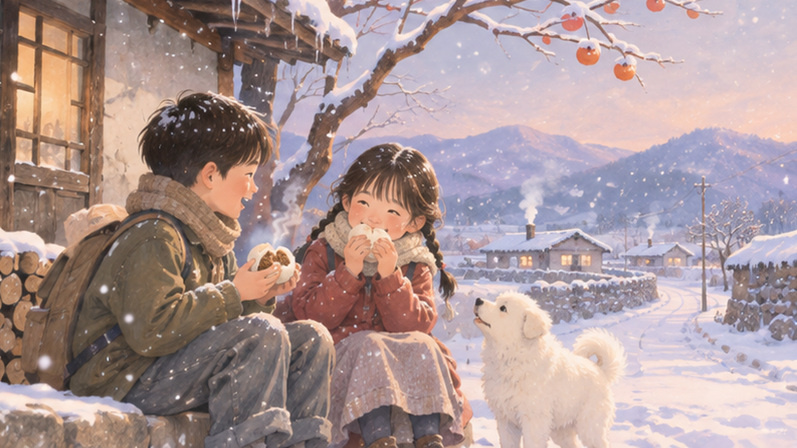

펜화 연구실
세밀한 해칭과 선의 긴장으로 기록한 겨울의 기억.
그림 저장한 편의 기억, 네 개의 시선. 시 연구 · 창작 · 시평 · 시화 · 독립 영상 · 작품 아카이브를 연결하는 공개형 디지털 창작실.
기획·발행 책임: 명도재 이명우
작품이 늘어나도 회차를 먼저 고르고, 선택한 회차에서 4인의 시와 시평·시화를 감상합니다.
시인별 작품 선택
제1회 그림을 전시 중입니다. 제2회는 선택한 시인별 시화가 작품 옆에 나타납니다.
세밀한 해칭과 선의 긴장으로 기록한 겨울의 기억.
그림 저장
겨울의 빛과 색의 번짐으로 재현한 온기.
그림 저장
이야기와 인물의 표정을 강조한 동화적 화면.
그림 저장이미지는 특정 실존 화가의 서명작으로 표시하지 않습니다.
네 편의 32초 시화 영상은 H.264 MP4 파일로 각각 다운로드할 수 있습니다. 영상의 오디오는 자체 제작한 연주 배경음이며 시낭송 음성은 아직 포함되지 않았습니다. 시의 읽어주기 기능은 위의 브라우저 낭독 버튼을 이용하세요.
시학 연구실의 간략한 학습용 분류입니다. 문학사적 평가와 개별 작품의 편차를 고려하여 절대적인 정형으로 사용하지 않습니다.
구체적 감각 → 이미지의 관계 → 정서적 전환 → 함축된 마무리 순으로 검토합니다. 시인은 관찰과 절제, 언어 윤리, 독창성과 퇴고의 책임을 지며 자유시·정형시·산문시·서사시·시조·동시 등을 주제에 맞춰 선택합니다.
작업 흐름: 작가 지시 → 비서실장 기획 → 연구·창작 병행 → 교정 → 비평 → 시화 → 영상·오디오 → 검수 → 작가 최종 승인 → 공개 발행 → 백업. 부서명은 AI 작업 역할을 구분한 가상의 운영체계이며, 실존 전문가가 고용·참여했다는 뜻은 아닙니다.